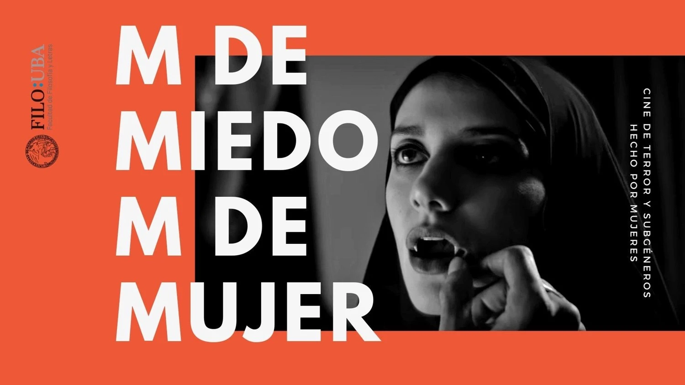

M de Miedo, M de Mujer - La Monstrua en FILO-SEUBE
Publicado el 25 de Agosto 2022

El seminario M de Miedo, M de Mujer, destinado al estudio y visibilizacion de las mujeres en el cine de terror (dirigiendo, produciendo, escribiendo y teorizando) se desarrolla el marco del SEUBE de la Facultad de Filosofía y Letras (UBA). Las clases se dictarán todos los martes, del 23/8 al 11/10, de 19 a 21 hs por el canal de Youtube de La Monstrua.
En la seccion de cursos podran encontrar las grabaciones de las clases ya dictadas asi como la bibliografía discutida en ellas.